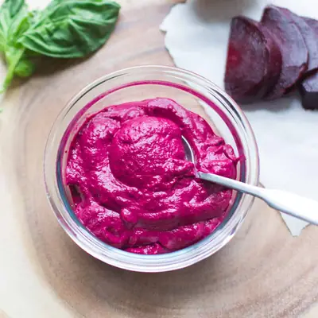

Beet Pasta Sauce

Ingredients
- 170g of roughly chopped steamed or roasted and peeled beets, about 1 1/2 medium beets
- 1/4 cup (30g) walnuts
- basil, a handful (doesn't have to be exact)
- 1/3 cup (3 oz or 80g) whole milk ricotta
- 2-3 garlic cloves
- 1-2 tablespoons lemon juice
- 3 tablespoons extra virgin olive oil
Steps
- In a food processor or blender, add all the ingredients minus the oil and pulse several times.
- Leaving the food processor running, slowly add the olive oil until all ingredients are well combined. If pesto is too thick, add extra oil or water.
- Store in a jar for up to a week or freeze for up to 3 months (recommend freezing in single-serve portions)
Recipe by Min Kwon · Kidfriendly Meals, from MJ and Hungryman. Saved here for personal use; the original has the full notes, tips and photos. Open original